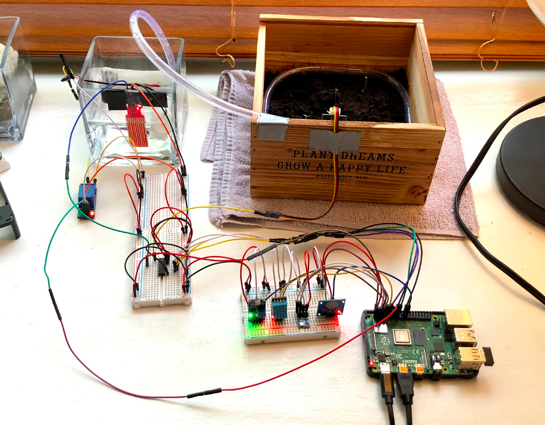

Project Description

During quarantine, I bought a Raspberry Pi and some sensors from Amazon to learn about IoT programming. After some tinkering, I thought an interesting project to learn would be to build a self-watering garden. Then, I bought some seeds in an attempt to make this useful for more than my own learning to try to actually grow some herbs.
Obviously, what I've done here is not the easiest, cheapest, or most effective way to grow herbs! It is way over-engineered for the purpose of learning about building systems with the pi.
Also during quarantine, I wanted to beef up my web development skills, so built an API to which the pi can post the sensor readings, and a front-end which will render some cool graphics. Since I built the rest of the project in Python and it is my preferred programming language, I chose Flask to build the web app. I hosted the app on Heroku , since it is so simple to use and has a free "hobby" tier and used PostgreSQL for the database which will store the readings.